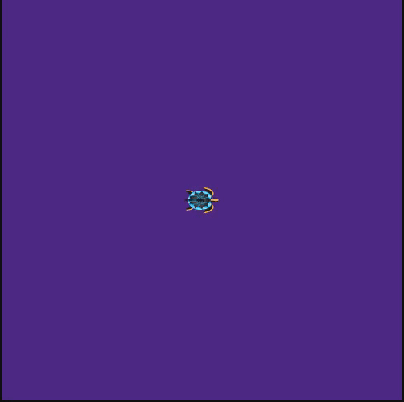

Homework 01
Task 0 (Preliminaries)
Task 0.000 (Reading the Guidelines)
- Carefully read the homework submission guidelines.
- Be sure to follow these guidelines for every assignment.
Task 0.001 (Making a Git Repository)
- Create a git repository using the github classroom link (sent separately).
- All packages made for this class should be a subdirectory in this git repository
Task 0.002 (Making a README)
Add a file called
README.mdto the repository, based on the following template:# ME495 Sensing, Navigation and Machine Learning For Robotics * <First Name> <Last Name> * Winter 2021 # Package List This repository consists of several ROS packages - <PACKAGE1> - one sentence descriptionReplace the
<ITEM>with the appropriate item in the template above.Commit this
README.mdto your repository.Whenever you add a new package, list it in this
README.md
Task A (Robot Description)
The goal of this assignment is to adapt the model in the turtlebot3_description for our needs. Upon completion, you will be able to display a model of the turtlebot3 robot in rviz.
Task A.000 (nuturtle_description package)
- Create a ros package called
nuturtle_description.- This should be a directory within your repository (i.e.,
<reponame>/nuturtle_description) - The package will contain urdf files and basic debugging, testing, and visualization code for the robots you will be using in this class
- Update the
package.xmlas follows- Give it a version number other than 0.0.0.
- Provide a descriptive description.
- Fill in your name and email address as the maintainer and as an author
- Set the License to Apache License 2.0 (This is what turtlebot3 code is released under)
- The package has an
exec_dependonrviz,robot_state_publisher,joint_state_publisher, andxacro
- This should be a directory within your repository (i.e.,
- The package (like all packages you write) must pass
catkin_lint -W2with no warnings or problems- You should run catkin_lint frequently because it helps you fix problems!
- You should run catkin_lint prior to submitting because it helps your grade!
Task A.001 (visualization)
- Write a launchfile called
load.launchthat loads the turtlebot3_burger URDF and optionally allows viewing it in rviz.- The argument
use_rviz(default true) controls whether rviz and thejoint_state_publisheris launched. roslaunch nuturtle_descirption load.launch --ros-argsshould print a description of theuse_rvizparameter.
- The argument
- Copy the minimal set of meshes and urdf files from the
noetic-develbranch of theturtlebot3_descriptionpackage required to accomplish the above.- Do not include any files that are not necessary.
- Users should not need to set the
TURTLEBOT3_MODELenvironment variable for this to work. - No
turtlebot3_packagesshould need to be installed forroslaunch nuturtle_description load.launchto work.
Task A.002 (Yaml File)
- Create
diff_params.yamlfile to provide a complete parametric description of a differential drive robot. - You should have the following parameters:
wheel_radius: The radius of the wheelswheel_base: The distance between the wheels
- Modify the turtlebot3 URDF so that it reads these parameters from
diff_params.yamlin the appropriate locations such that- Changing
wheel_radiuschanges the collision geometry of the wheels - Changing
wheel_basechanges the distance between the wheels
- Changing
- Update
load.launchso that the parameters indiff_params.yamlare loaded into the parameter server.
Task A.003 (README)
Write a README.md for your package based on the following template
# Nuturtle Description URDF files for Nuturtle <Name Your Robot> * `<Command Here>` to see the robot in rviz.
Task B (C++ and 2D Transforms)
Here you will begin to write a library called rigid2d for performing 2D rigid body transformations. You are not permitted to use any libraries other than the C++ standard library to complete this assignment.
Task B.000 (library implementation)
- Create a new directory called
rigid2din your base repository.- For this assignment, you will compile the code as a single executable. In a subsequent homework we will turn it into a ROS package/library.
- Download rigid2d.hpp into
rigid2d. This is a header file for the library you will implement.- Implement the functions specified in
rigid2d.hppin an implementation file calledrigid2d.cpp - You may add private members to any class but do not add any public members
- Note that the doxygen style comments in the header files do not need to be repeated in the implementation files
- It is a matter of style whether to put these detailed comments in the
.cppor.hppfile - Use doxygen style comments throughout your code for the rest of this course.
- It is a matter of style whether to put these detailed comments in the
- Implement the functions specified in
Resources
- For more information about the operator overloading going on in this example see (a good Stack Overflow post)
- For more information about transforms, see Lynch & Park, "Modern Robotics", Chapter 3
Task B.001 (main implementation)
- Create a file called
main.cpp.- This program should prompt the user to enter two transforms: \(T_{ab}\) and \(T_{bc}\)
- It should then compute and output \(T_{ab}\), \(T_{ba}\), \(T_{bc}\), \(T_{cb}\), \(T_{ac}\), and \(T_{ca}\)
- Next the program should prompt the user to enter a vector \(v\) and the frame in which it is defined (either 'a', 'b', or 'c').
- It should then output the vector in frames 'a', 'b', and 'c'
- Compile your program using the following command:
g++ -Wall -Wextra -g -std=c++17 -o rigid2d main.cpp rigid2d.cpp-Wallenable many warnings.-Wextraenable extra warnings-ginclude debugging symbolsstd=c++17C++17 standard-o rigid2dThe executable will be called rigid2d
Task B.002 (conceptual questions)
Answer the questions below in rigid2d/README.md. Copy and paste into your own README.md and then answer the questions inline. Hints to each question are provided below.
# Rigid 2D transformation Library
A library for handling transformations in SE(2).
# Conceptual Questions
1. What is the difference between a class and a struct in C++?
2. Why is Vector2D a struct and Transform2DClass (refer to at least 2 specic C++ core guidelines in your answer)?
3. Why are some of the constructors in Transform2D explicit (refer to a specific C++ core guideline in your answer)?
4. We need to be able to ~normalize~ Vector2D objects (i.e., find the unit vector in the direction of a given Vector2D):
- Propose three different designs for implementing the ~normalize~ functionality
- Discuss the pros and cons of each proposed method, in light of the C++ Core Guidelines.
- Which of the methods would you implement and why?
5. Why is Transform2D::inv() declared const while Transform2D::operator*=() is not (Refer to C++ core guidelines in your answer)?
- Refer to [[https://isocpp.github.io/CppCoreGuidelines/CppCoreGuidelines#con-constants-and-immutability][C++ Core Guidelines (Constants and Immutability)]] in your answer
Hints
- Information About Classes
- The C++ Core guidelines (Classes and Class Hierarchies) section has the answers.
- The C++ Core guidelines (Constructors, Assignments, and Destructors) section has the answers.
- You may find guidelines in The C++ Core guidelines (Classes and Class Hierarchies) section helpful.
- The C++ Core Guidelines (Constants and Immutability) will be helpful.
Task B.003 (adjoints and twists)
- Add a class or struct called
Twist2Dtorigid2d- This class represents a 2 dimensional twist
- You should also define
operator<<andoperator>>for this class - Follow the convention used in Modern Robotics to place the angular component prior to the linear component
- Add functionality to
Transform2Dto convert a twist to a different reference frame using the adjoint- Be sure to document everything using doxygen-style comments in a manner consistent with the rest of the file
- Add functionality to normalize a
Vector2D - Add a prompt to
main.cppthat allows a user to enter a twist in addition to a vector- The twist is specified in the same frame as the vector
- Output the twist in frames 'a', 'b', and 'c'
Task B.004 (testing)
We will use the catch2 framework for unit testing in this class.
- Download catch.hpp.
- Create a file called
tests.cppthat thoroughly tests theTransform2Dclass- To use see The Tutorial
- Be sure to use approximate comparisons: see Floating Point Comparison Section
- Every method in the class, along with
operator<<andoperator>>should have at least test. You may directly combine your tests with the work of your classmates to achieve this coverage, as long as the following conditions are met:You personally must develop and write at least two test cases
You list the contributor's names in a comment at the top of
tests.cppEach test is annotated with the author's name as follows:
TEST_CASE("inverse", "[transform]") // First Name, Last Name
- Compile the tests using
gcc.- Make sure they pass! You will be using rigid2d in future assignments so you want your implementation to be correct.
Task B.005 (vanilla cmake)
The ROS build system uses catkin, which in turn is based on CMake, a popular build system for C++ projects. In this task we will make the rigid2d a plain cmake project.
Behind the scenes, catkin is essentially just CMake with some custom functions added in.
First, some files must be re-arranged and directories added within the base
rigid2dpackage directory:- Move
rigid2d.hpptoinclude/rigid2d/rigid2d.hpp - Move
tests.cpptotests/test.cpp - Move the remaining
.cppfiles tosrc/<FILE>.cpp
- Move
Copy the
CMakeLists.txttemplate below, fill in the<BLANKS>and add it to git:cmake_minimum_required(VERSION 3.9) project(rigid2d) # create the rigid2d library and add it's include directories add_library(rigid2d src/<BLANK>.cpp) target_include_directories(<NAME_OF_RIGID2D_LIBRARY_TARGET> PUBLIC include/) target_compile_features(rigid2d PUBLIC cxx_std_17) # enable C++ 17 target_compile_options(rigid2d PUBLIC -Wall -Wextra) # create the executable and link it with the rigid2d library add_executable(rigid2d_main <MAIN>.cpp) target_link_libraries(rigid2d_main <NAME_OF_RIGID2D_LIBRARY_TARGET>) enable_testing() add_executable(rigid_test tests.cpp) add_test(NAME Test_of_Rigid2d COMMAND rigid_test) find_package(Doxygen) set(DOXYGEN_USE_MDFILE_AS_MAINPAGE README.md) # Use the readme in your doxygen docs doxygen_add_docs(doxygen src/ README.md ALL)Build the project (and make sure the contents of the build do not end up in git!):
mkdir build # Create the build directory cd build # Enter the build directory cmake .. # Generate the build system (in this case, Makefiles) make # Run make to compile the projectAlternatively
cmake -B build . # Have cmake create the build directory cmake --build build # Have cmake run make in the build directory- More-or-less,
catkin_make_isolatedruns the above steps for you on each package.
- More-or-less,
To run the tests, from the
builddirectory runctest --verbose.Your code is now in build/
Enjoy your doxygen documentation by opening
build/html/index.htmlin your web-browser.
Task C (Turtle Sim)
The goal of this task is to make a turtle in the turtle simulator move in a rectangular trajectory. The movement will be started by calling a /start service.

Task C.000 (trect package)
- Create a ros package called
trect.- This should be a directory within your repository (i.e.,
<reponame>/trect) - Update the
package.xmlas follows- Give it a version number other than 0.0.0
- Provide a description other than the default.
- Fill in your name and email address as the maintainer and as an author
- Choose a license other than TODO
- The package has a
dependonroscpp. - Fill out the other dependencies properly.
- This should be a directory within your repository (i.e.,
- The package must pass
catkin_lint -W2with no warnings or problems (you will likely need to revisit point this as you add to the package).
Task C.001 (turtle_rect node)
- Write a node called
turtle_rectinturtle_rect.cppthat reads the following parameters from the parameter server and logs them asROS_INFOmessagesmax_xdot- The maximum translational velocity of the robotmax_wdot- The maximum rotational velocity of the robotfrequency- The frequency of the control loop
- Write a publisher that publishes
cmd_velcommands at a fixed frequency offrequency- Use a timer or
ros::Rateto ensure a somewhat-consistent publishing frequency
- Use a timer or
- Subscribe to the
posetopic to get the turtle's position - In
turtle_rect, implement a service calledstartthat causes the node to- Clear the background of the turtle simulator
- Draw the desired trajectory (use the turtlesim teleportation and pen services)
- Causes the robot to start following the rectangle using values computed by
control_law - The service request should provide the location and dimensions of the rectangle to the node
- Make sure that the published
xvelocity never exceedsmax_xdot, the published angular velocity never exceedsmax_wdot, and the publishedyvelocity is always zero. - Include a comment block at the top of the node describing the ROS API of your node.
Task C.002 (trect.launch)
- Write a launchfile called
trect.launchthat runs the turtle simulator and theturtle_rectnode and sets the parameters to have the following values:max_xdot = 2.0,max_wdot = 1.0,frequency = 100.
Task C.003 (documentation)
Write a
README.mdfor your package using the following template, filling in the<BLANKS># Turtle Rect * A package that causes the turtlesim turtle to follow a rectangle. # Example Usage ``` roslaunch trect trect.launch rosservice call start <ARGUMENTS_USED_IN_DEMO_HERE> ``` You should include a gif animation of the turtle completing one cycle in the
README.mdfor a rectangle withx=2 y=3 width=4 height=5.
.